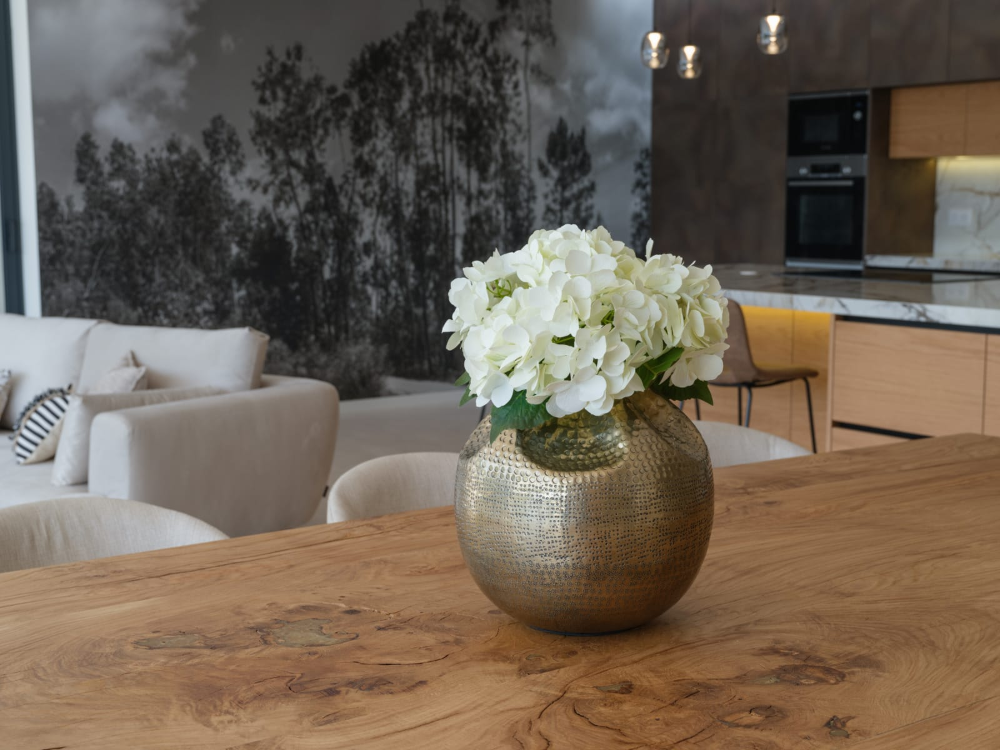
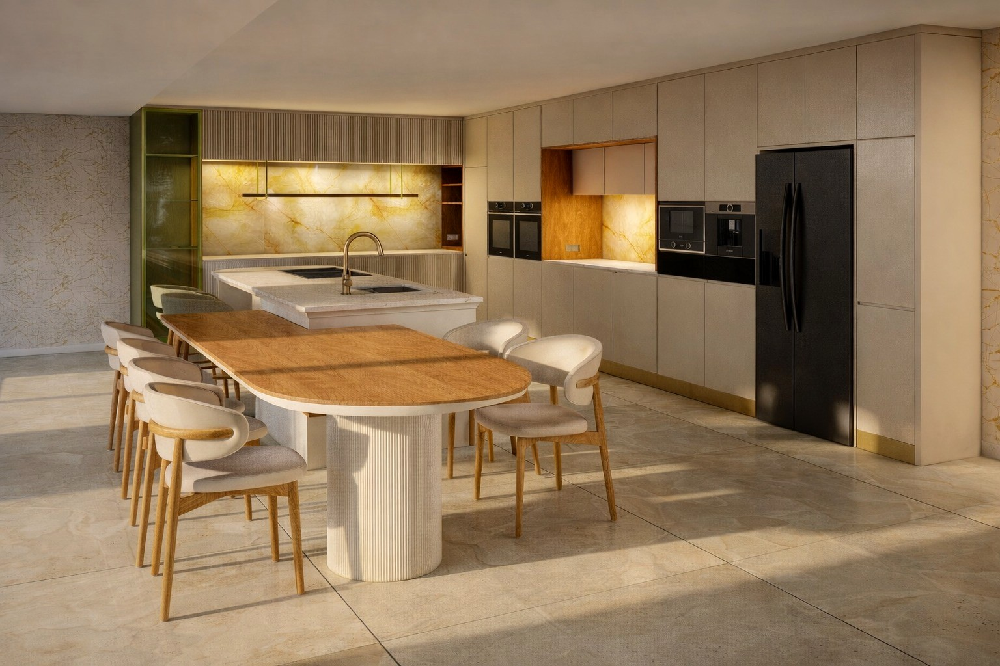
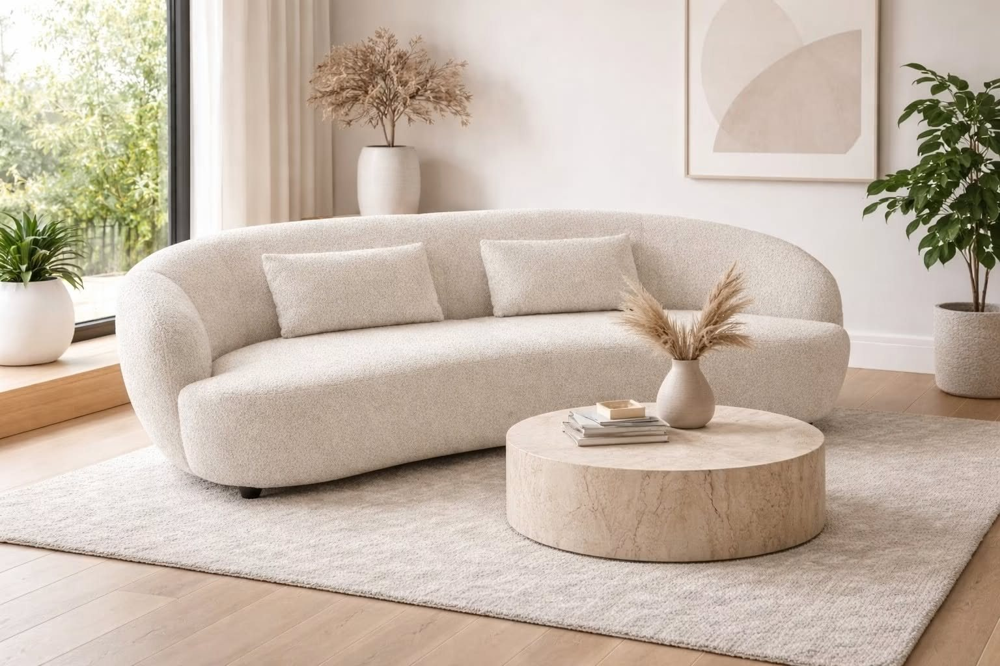
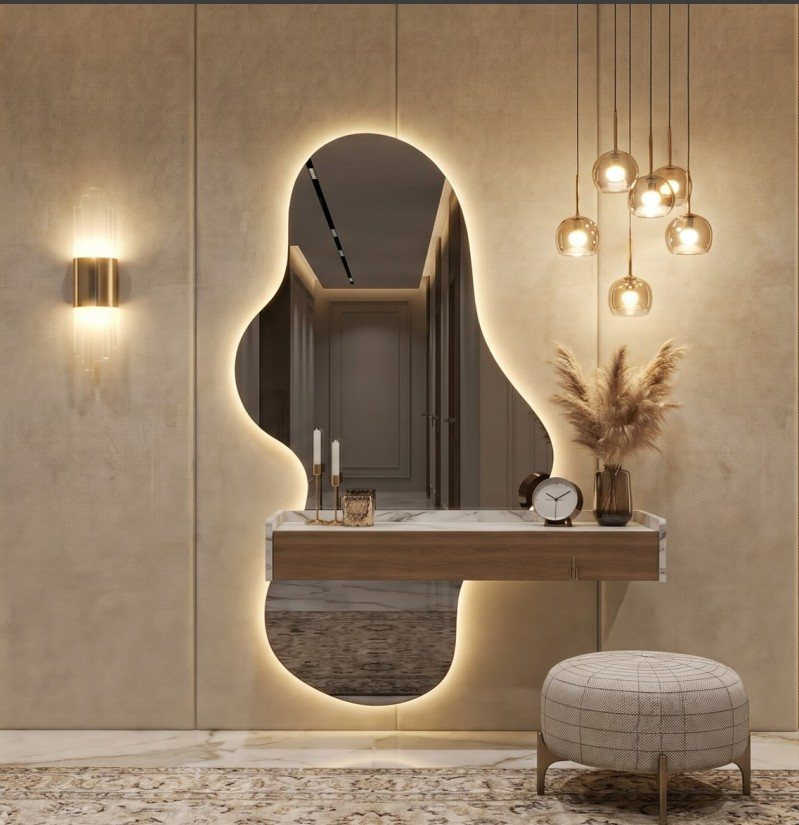
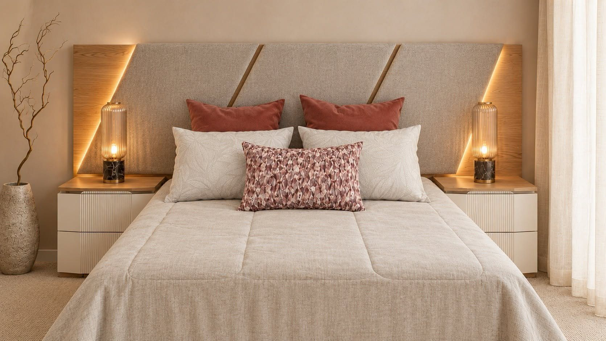

01
Âmbar
Carvalho e lacados bege, com a lareira e a parede revestidas a papel de parede, numa sala comum calorosa e serena.
O nosso trabalho
Cozinhas, interiores e decoração, pensados para diferentes formas de viver.
Projetos concluídos
Uma seleção entre mais de 2000 projetos concluídos.
Carvalho e lacados bege, com a lareira e a parede revestidas a papel de parede, numa sala comum calorosa e serena.
Tons neutros, o verde-oliva de um cadeirão e apontamentos dourados. Madeira e lacado branco ligam a sala à zona de refeições num ambiente sereno e sofisticado.
Linhas simples, carvalho maciço e apontamentos em ferro num ambiente ligado ao exterior.
Tons claros, madeira e iluminação indireta criam um ambiente sereno e contemporâneo.
Um apartamento acolhedor no Porto, com soluções desenhadas à medida da área disponível.
Cozinhas
Pensadas consigo, feitas à medida e montadas pela nossa equipa, do primeiro esboço ao último puxador.


Decoração
Iluminação, cortinados, papel de parede, tapetes e peças de arte, escolhidos consigo para que cada espaço fique pronto a viver.
Projetos 3D
Damos forma às suas ideias em 3D, para que veja o projeto no seu espaço e decida cada detalhe antes da produção.

Catálogos
Para além das peças em loja, reunimos coleções completas de mobiliário, iluminação e acessórios, para escolher e combinar com calma.
Uma amostra




Pedir orçamento
Uma sala comum em carvalho e lacados bege, onde a lareira e a parede, revestidas a papel de parede, dão textura e calor ao espaço.
Mobiliário · Decoração · Iluminação1 / 4
Gostava de um resultado assim no seu espaço?
Fale connoscoElegância e conforto em cada detalhe. Os tons neutros do sofá encontram o verde-oliva do cadeirão e os apontamentos dourados, enquanto a madeira e o lacado branco da mesa de centro e da mesa de jantar dão ao conjunto um toque sofisticado e atual.
Mobiliário · Decoração · Iluminação1 / 5
Gostava de um resultado assim no seu espaço?
Fale connosco
Linhas simples, madeira de carvalho e elementos em ferro definem um ambiente contemporâneo, confortável e ligado ao exterior.
Mobiliário · Carvalho · Ferro1 / 7
Gostava de um resultado assim no seu espaço?
Fale connosco
Tons claros, madeira e iluminação indireta criam um ambiente sereno, onde conforto e linguagem contemporânea se encontram.
Mobiliário · Decoração1 / 4
Gostava de um resultado assim no seu espaço?
Fale connosco
Um apartamento no Porto, acolhedor e funcional, onde apontamentos de cor e soluções adaptadas à área disponível dão identidade ao ambiente.
Porto · Mobiliário · Decoração1 / 3
Gostava de um resultado assim no seu espaço?
Fale connosco
Cozinhas pensadas e feitas à medida, em carvalho, lacados e pedra. Cada uma desenhada para a casa e para quem nela cozinha.
Carvalho · Lacados · Porcelânico1 / 5
Gostava de uma cozinha assim no seu espaço?
Fale connoscoA decoração termina o que o mobiliário começa. Escolhemos consigo iluminação, têxteis, papel de parede e arte, para que cada divisão tenha uma identidade coerente.
Iluminação · Cortinados · Papel de parede · Arte1 / 17
Quer completar o seu espaço?
Fale connoscoVisualizações apresentadas antes da produção. Materiais, proporções e luz decididos com o espaço já à vista.
Cozinhas · Salas · Suites1 / 5
Quer ver o seu espaço antes de existir?
Peça o seu projeto 3D